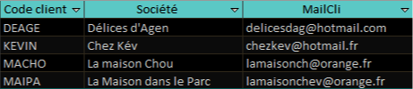
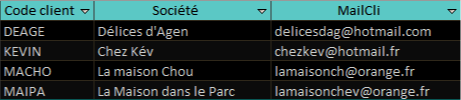

Contexte
L’objectif de cette mission est de commencer à exploiter la base de données de l’entreprise KDou pour pouvoir par la suite avoir des analyses et indicateurs pertinents. On souhaite faire des requêtes avec le logiciel Low Code Access.
Indicateur intéressant
La requête g, qui est décrit dans la suite, est une requête qui montre les clients qui n'ont pas encore passé de commandes. Cet indicateur est utile pour l'objectif de rentabilité de l'entreprise, effectivement, cette requête peut permettre à l'entreprise d'envoyer des mails publicitaires avec potentiellement des codes promotionnels pour encourager ces clients à acheter des produits et devenir des clients habituels.
Questions avec leur réponse
Dans les réponses il y a l'interprétation, le code SQL et la requête Access ou un extrait de celle-ci.
Question a : On voudrait des informations sur Jean-Guy Lauzon. C’est un fournisseur.
Pour cette requête on veut trouver les informations du fournisseur qui a pour contact Jean-Guy Lauzon, pour par exemple trouver son mail ou numéro de téléphone pour le contacter dû à un problème ou autre.
Question b : On veut vérifier les coordonnées des clients parisiens : en donner une liste triée par société.
Pour cette requête on veut la liste de tous leurs clients parisiens avec leur adresse, ce qui peut servir à créer un chemin de livraison optimal et regrouper les clients proches.
Question c : Quels sont les produits de provenance des États-Unis ayant un coût de moins de 25 € ? On veut connaître leur nom et prix, ainsi que le nom du fournisseur et la ville.
Cette requête répertorie les produits de moins de 25 € provenant de fournisseurs situés aux États-Unis. Cela peut permettre d’analyser les produits importés à bas prix depuis les États-Unis, afin d’évaluer leur rentabilité ou de rechercher d’autres fournisseurs similaires.
Question d : Quels sont les produits (fournisseur et pays de provenance) de catégorie viandes ou poissons ayant un coût d’achat de plus de 50 € ?
Cette requête regroupe les produits de plus de 50 € concernant la viande et le poisson. Cela peut permettre de comparer le prix de leur fournisseur à d'autres qu’ils pourraient trouver pour avoir des offres moins chères pour le même produit.
Question e : Quels sont les clients qui achètent de la viande ou du poisson ?
Pour cette requête on cherche les clients qui achètent de la viande ou du poisson. Cette requête peut permettre de les contacter facilement pour les prévenir qu’il y a eu un changement de produit dans ces catégories ou un rappel, ou encore leur proposer des produits similaires à leurs habitudes ’achat.
Question f : Quels sont les produits conditionnés dans du carton ou dans du verre ?
Cette requête informe sur quels produits sont emballés dans du carton ou du verre, ce qui pourrait permettre aux livreurs de mieux organiser leur camion, en plaçant les produits en verre au-dessus des autres pour éviter la casse.
Question g : Quels sont les clients qui n’ont pas encore passé de commandes (Code, société et mail) ?
Cette requête identifie les clients qui n’ont encore jamais passé de commande, en affichant leur code, nom et adresse e-mail. Cela peut permettre de leur envoyer un mail promotionnel pour les encourager à faire leur première commande.
 

Question h : Quelles sont les catégories de produits vendues par les fournisseurs américains ?
Cette requête donne la liste des catégories de produits vendus par des fournisseurs étasuniens. Elle peut permettre à KDou d’évaluer sa dépendance aux importations et de rechercher des alternatives européennes.
Question i : Quelles sont les 5 dernières commandes du client Max Deschamps ?
Cette requête renvoie les 5 dernières commandes de Max Deschamps. Elle permet, par exemple, de retrouver rapidement les informations en cas de réclamation.
Question j : Y a-t-il des fournisseurs sans produits au catalogue ?
Cette requête renvoie les fournisseurs n’ayant aucun produit dans l’entreprise, ce qui peut servir à faire un tri dans la table des fournisseurs afin de retirer ceux avec qui l’entreprise ne passe jamais de commandes.

Question k : Quels fournisseurs hors France n’ont pas encore de produits au catalogue de KDou ?
Même utilité que la requête j, mais appliquée uniquement aux fournisseurs hors de France.

Question l : Pour optimiser les livraisons, on regarde quels couples de clients sont à Paris. Lister les possibilités avec pour chacun Code, société et mail.
Cette requête affiche tous les couples de clients habitant Paris. Elle sert à optimiser les livraisons en regroupant plusieurs clients dans la même zone.
Question m : Quels fournisseurs proposent de la viande et du poisson ?
Cette requête renvoie les fournisseurs vendant de la viande et du poisson. Cela permettra à l’entreprise, s’ils manquent de poissons ou de viande, d’en recommander chez le bon fournisseur ou de comparer selon les ventes réalisées.